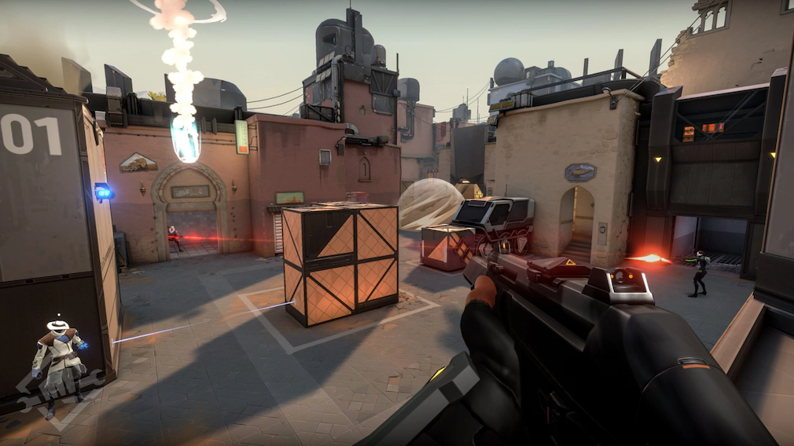
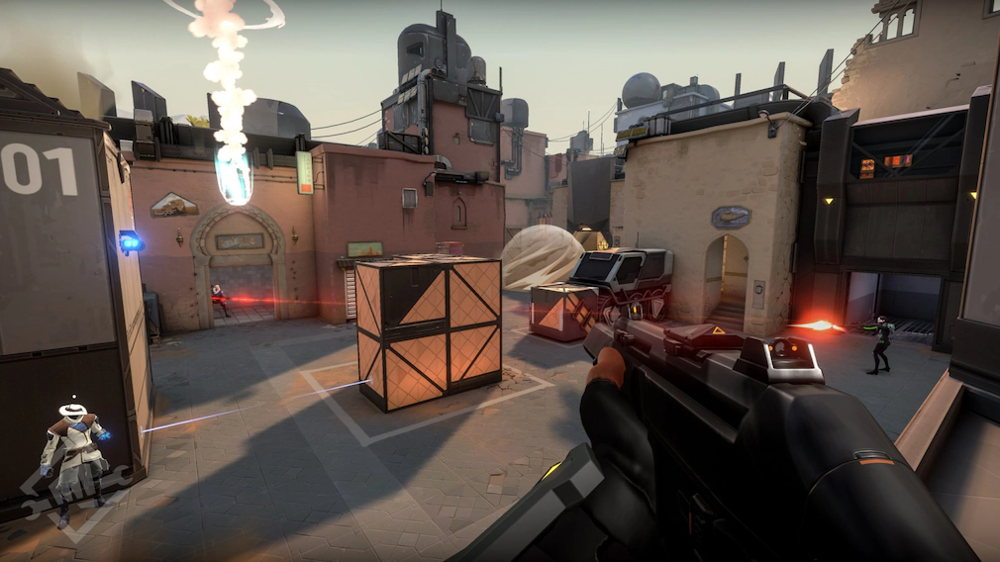
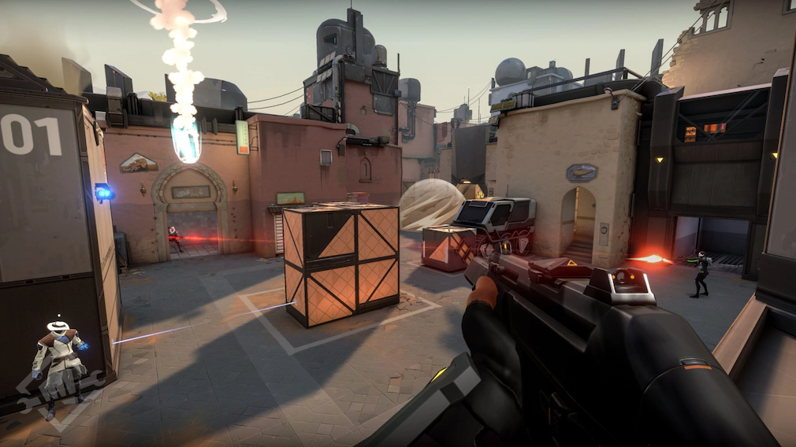

Valorant ist ein taktischer First-Person-Shooter (FPS), der von Riot Games entwickelt wurde. Das Spiel kombiniert präzise Schießmechaniken mit einzigartigen Fähigkeiten der Agenten und bietet ein strategisches und kompetitives Spielerlebnis.
Valorant wird in 5-gegen-5-Matches gespielt, bei denen ein Team die Angreifer und das andere die Verteidiger stellt. Die Angreifer versuchen, eine "Spike"-Bombe auf bestimmten Plätzen zu platzieren, während die Verteidiger dies verhindern oder die platzierte Bombe entschärfen müssen. Ein Match besteht aus mehreren Runden, und das Team, das als erstes 13 Runden gewinnt, entscheidet das Spiel für sich.
Jeder Agent besitzt eine individuelle ultimative Fähigkeit, die mit der Zeit oder durch das Sammeln von Kills und Orbs aufgeladen wird.
Valorant bietet ein umfangreiches Arsenal an Waffen, darunter Pistolen, Sturmgewehre, Scharfschützengewehre und Nahkampfwaffen. Das Spiel besitzt ein Wirtschaftssystem, bei dem Spieler für eliminierte Gegner, gewonnene oder verlorene Runden und das Platzieren oder Entschärfen der Spike Geld erhalten. Mit diesen Credits können sie Waffen und Fähigkeiten für die nächste Runde kaufen.
Durch Siege steigt man im Rang auf, Niederlagen können jedoch zum Abstieg führen.
Valorant ist ein komplexer, strategischer Shooter, der sowohl schnelle Reflexe als auch taktisches Denken erfordert. Mit regelmäßigen Updates, neuen Agenten und Karten bleibt das Spiel dynamisch und herausfordernd.
